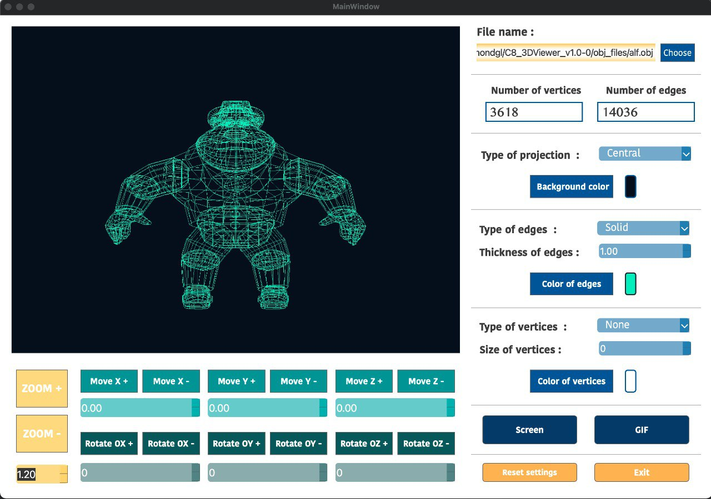

3DViewer version 1.0.

Инструкция
Программа позволяет открывать и просматривать файлы формата .obj
Объект можно вращать вокруг осей X, Y, Z, перемещать по осям X, Y, Z, а также изменять масштаб.
Перемещать, вращать и масштабировать объект можно с помощью клавиш на нижней панели.
Настройки
На правой панели приложения можно задать следующие настройки отображения объекта:
Для возвращения к стандартным настройкам нажми Reset settings
Screenshot и Gif
Для создания скриншота модели нажми кнопку Screen и выбери путь сохраниения .bmp или .jpeg изображения.
Для создания GIF-изображения нажми кнопку Gif и вращай/перемещай объект .
По завершению записи приложение предложит сохранить файл.